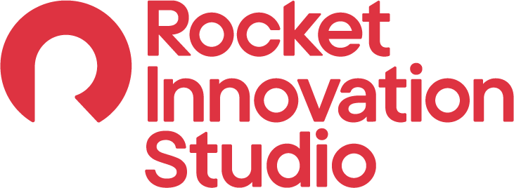

Introduction
This past winter I completed my fourth co-op work term as a software developer intern with Rocket Innovation Studio. The following report summarizes the work I did for this term including job responsibilities, skills learned, and how those skills will benefit my future educational, occupational and personal pursuits.
About my Employer - Rocket Innovation Studio
The goal of Rocket Innovation Studio is to find the best Canadian talent and set them up to thrive with a team that, in the words of their founder, is "obsessed with finding a better way". As part of the Rock family of companies, Rocket Innovation Studio makes use of cutting-edge technology to provide the best mortgage software in the business. Potential homeowners feel supported through every step of their journey, from house-hunting to refinancing years down the line.
Internally, the company's culture supports every team member's personal journey to succeed. Frequent events, talks with executives, and foundational sayings (ISMs) keep everyone focused on the company's core mission to "help everyone home".
When I first stumbled upon their job posting, I asked myself: "what exactly is an ISM?" Throughout my term I came to understand. These little sayings, ranging from the seemingly-obvious "do the right thing" to the more dubious "we eat our own dog food" were all intended to lay out the core values of the company, instilling in every employee a set of guidelines to follow to uphold the archetype of the compassionate trailblazer: one who acts professionally and with purpose, never backs down from a challenge, and focuses on lifting up others as much as themselves.
Job Description
Having been placed on a team whose primary purpose was to support the company's larger projects, and especially in the wake of a major branding overhaul, required me to wear many hats when it came to the work I was doing. This ever-changing environment demanded diligence, collaboration, and a willingness to learn both independently as well as from mentors and teammates. These non-technical skills have been some of the most useful determiners of success both inside this role and otherwise for me.
Some of my tasks were the standard software development stories I was used to: features and bugs, working with familiar technologies such as React. However, ast the needs of my team and the rest of the company shifted, I found myself dabbling in various ends of the software development process. I dipped my toes into testing. automation, and even setting up infrastructure as code (IAC) and events with AWS.
This work term challenged me to be flexible and adaptable, and to be willing to ask questions or seek help shamelessly when I needed it.
In addition to my daily tasks, my role featured plenty of opportunities for professional development. I attended company events, visiting the cities of Detroit and Windsor and learning of their historic significance to the company; I participated in Hackweek, where I practiced adding Lighthouse to test for performance and accessibility; and, finally, I finished off my term with a presentation about what I had done and learned in the past four months.
Learning Goals
1 Engage in pair programming with team members in order to facilitate deeper understanding of the product and improve communication skills
Upon starting my internship with Rocket it became immediately clear to me that collaboration was key to success. In order to make the most of my work term, learning as much as possible, I resolved to keep a careful eye out for interesting work items and connect with my team members to get insight into how they would be tackled. My goal was to meet with every member of my team at least once for a pair programming exercise. This, I hoped, would lead to a deeper understanding of the company's products as well as how professional developers tackle challenges in their daily tasks.
Reflection: In my four months at Rocket I was able to meet with all my team members not just once, but multiples times (often more than once a week). I became adept at sharing my point of view on the projects our team worked on. Interestingly, shadowing and working alongside my peers made me more confident in my ability to work independently, as I had a greater understanding and trust in my knowledge of the system, could better gauge when I needed to ask for assistance, and trusted my team members to have valuable insight.
2 Become adept at using the company's tech stack, including and especially unfamiliar technologies like Angular and Cypress
Rocket's tech stack featured various technologies that I hadn't encountered before. Most notably was Angular, a framework of Javascript, and Cypress, a frontend testing tool. While my experience with React and Typescript provided a foundation for learning Angular, there were still a lot of differences that I knew would make the process its own challenge. As a result, I strove to focus on these two technologies and learn as much as possible in my short time through whatever means I could. My plan was to strike a balance between absorbing knowledge from secondary sources -- youtube videos and talks with team members -- and hands-on experience by working on user stories directly involved with these tools. By the end of the term, my hope was to feel confident enough to use this tech stack on my own.
Reflection: While Cypress didn't end up being as large a part of my development tasks as I thought it would be, I still got a fair shot at learning both tools. I began my search by watching Youtube videos that summarized the basics of Angular and Cypress, delved into articles on more specific tasks that related to my work, and finally executed my knowledge by pair programming with my more seasoned team members. I was able to work on multiple stories for each tool, successfully utilizing them to increase the quality of the product. Knowing what I do know, I would gladly use both tools in a personal project of my own, exhibiting my proficiency with what I have learned.
3 Take advantage of company resources and culture (e.g. ISMs) to develop my best professional self and be ready for future career goals
Perhaps the most notable thing to me about Rocket Innovation Studios, and the family of companies as a whole, was how dedicated they were to their brand image and sense of internal culture. The company provided me with an "ISMs" book during my onboarding which outline the standards expected from employees in behaviour, attitude, and work ethic. Impressed, I sought to understand the core principles behind thse slogans and to put them into practice in my daily work. By checking in frequently with my mentor and leader, I was able to ensure that I was living up to these standards and find areas for improvement and advice on how to apply these values to future careers.
Reflection: During my term, I had the pleasure to attend "ISMs Day": an entire event dedicated to learning how to engage with this company culture. I participated actively in the event, which included questions, presentations, and even mini-games with book prizes (I won a book on strategies for innovation!) Understanding the reasoning behind each of the ISMs let me follow them as guideposts, presenting myself to the company in an engaged and eager manner. Every day I showed up to "do the right thing", as one of the ISMs says. Additionally, these slogans gave me the language to voice my progress to my team and to receive evaluation from my team leader. In the end, I successfully embodied the values of the company and held myself to the best standard of quality in all situations.
4 Gain confidence in Agile development practices in a professional setting
I was no stranger to the idea of Agile development before starting this position; in fact, I had just finished a course dedicated to the software development cycle and incorporating Agile philosophies into my work. However, many core ideas were still relatively unpracticed, like assigning story points and participating in backlog grooming meetings. As a result, I made one of my goals this term to absorb myself fully in the Agile processs. I wanted to be an attentive and eager participant in all sprint meetings, from planning to demos and breakdowns. When used correctly, I knew that Agile concepts could improve productivity and raise my level of awareness concerning my team's overall workflow. I hoped that by the end of the term I would feel comfortable estimating how long my tasks would take with a high degree of accurace, and understanding the general flow of work through my team's backlog.
Reflection: By the end of my term, my comfort and productivity within the team's Agile workflow had greatly increased. I quickly got used to updating task statuses in a prompt manner, practicing assigning story points for accurate estimation of effort, and participating in planning meetings. I made a point to speak up whenever possible, asking questions to clarify the work so that I could better understand my part in the team's overall goal. This allowed me to set reasonable expectations for each week's work and move towards -- and meet! -- concrete, clearly-defined goals for myself.
5 Become more familiar with both automated and manual testing, including both development and execution of tests
Testing was never my strong suit, and never a strong interest of mine either. However, my very first task this term was to develop a sset of manual test plans and cases for the main feature that my team had been developing. I knew then that testing would be a significant part of my work this term, and, interestingly enough, I was excited. I set a goal for myself to explore both automated and manual testing concepts, contributing to test plans, exploring edge cases, and ensuring that a test plan was made and/or executed for every user story I completed. This goal demanded I had a deeper understanding of the codebase as a whole, and that I quickly grasp the expected outputs so that I could accurately create test cases and find errors before they were pushed to production.
Reflection: My original test plans were immediately adopted by team and others within our vertical, and were expanded to include other related stories. I found myself frequently going back to the "test plans" tab of Azure DevOps to update an old test case or add a new one, slowly but surely expanding the coverage of the main site. I also learned how to implement automated tests, and went above and beyond this goal by adding them to the project pipeline to ensure that all pull requests followed company standards.
Further Reflection
Working with Rocket was a brand new and breathtaking experience. With friendly and knowledgable peers to support me around every corner, I felt prepared to succeed at any task. My work this term not only taught me crucial new texhnologies, it also challenged me to improve my interpersonal skills, take ownership of my work, stay curious, and move forward with compassion and confidence.
If I could caange one thing about this term, it would be to step outside the guidance of my own team. Broadening my horizons by connecting with others unrelated to the work I was doing could lead to even more diverse opportunities to learn and grow down the line, and the potential to eventually dabble in other interesting areas within the company that I hadn't even imagined.
Conclusion
Thanks to Rocket, I feel prepared and confident moving forward into my final year of studies. I am proud of how my abilities have grown and know that I can bring good work to the table. I am hungry to see what comes in the future, and to spread my reach even farther into the vast world of computer science.